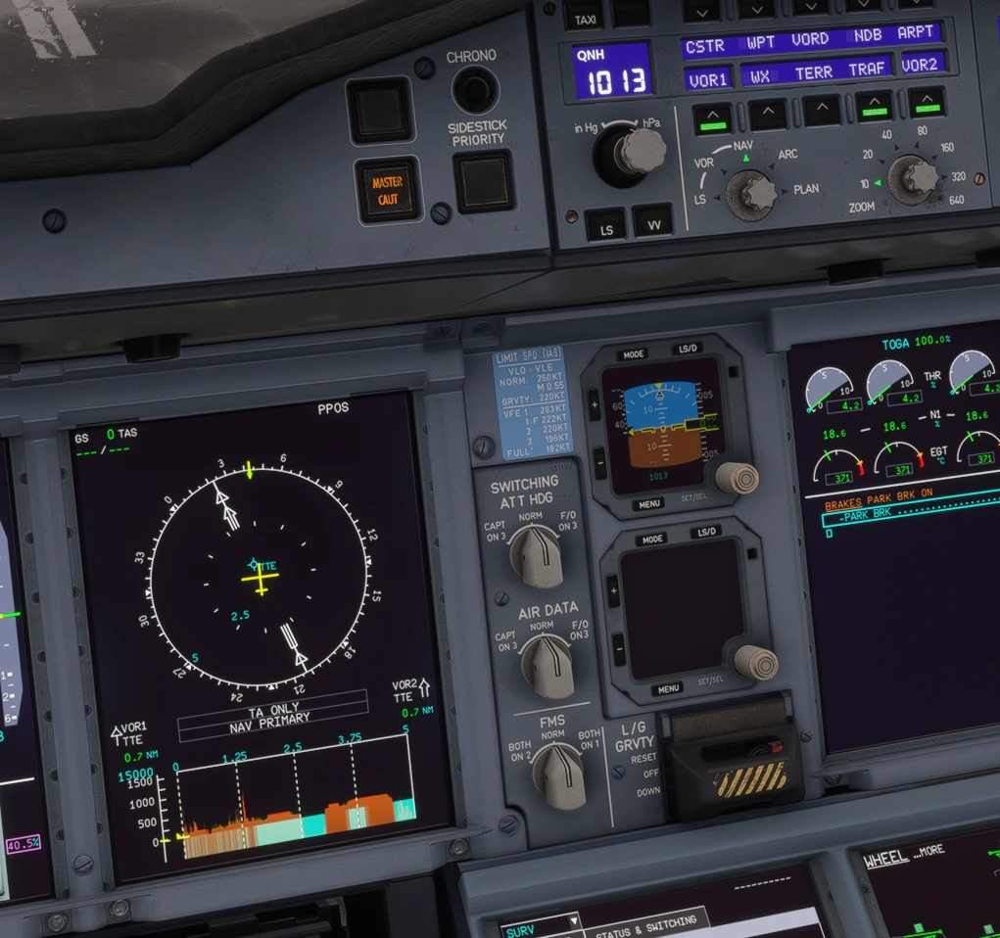
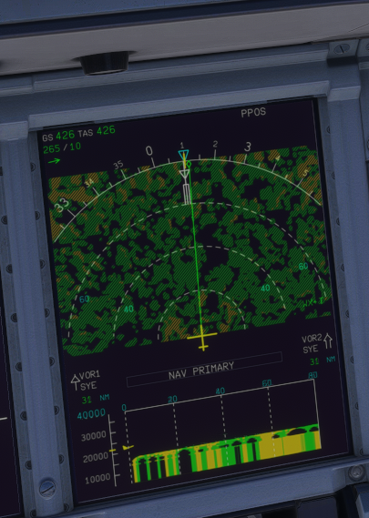
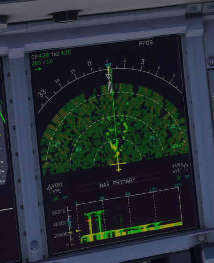

Radar, terrain and VD after the A380 and A320 manuals
The vertical cut, the VD scale and terrain placement, and the weather picture reworked to the FCOM / FCTM
AircraftA380X (VD) and both aircraft (weather picture)Where to find itA380X VD; both NDs with the radarPR branchpr/09-nd-manuals-pass (top of the stack 1, 2, 4, 3)StatusTested in the sim (September 2026).PicturesIn-sim screenshots taken during development (native WASM gauge).
1. The vertical cut (A380X VD)
2. The VD scale and the terrain height
3. The weather picture (both aircraft)
4. Limitations and why
1. The vertical cut (A380X VD)
In the managed lateral modes the VD shows the terrain and weather along the flight plan (a 200 NM window from just behind the aircraft, with the turns); in the selected modes along the track (FCOM: VIEW ALONG ACFT TRK). More than 5 NM off the plan: the track.
The terrain is the highest across a width of 2 × RNP (1 NM terminal, 2 NM en route above 18 000 ft).
The grey area starts at the next track change of more than 3° (the VD no longer matches the ND beyond it).
2. The VD scale and the terrain height
With a trajectory, the highest of the aircraft and the path sits at three quarters of the window: in cruise the ground stays on the plot, as on the real aircraft at FL400.
The gap under the aircraft symbol is the true height, whatever the altimeter setting (FCOM / FCTM).
Water in the ND teal; no magenta on the VD; no VD weather when TERR is not available.

Figure 1. A380X VD with the terrain profile and water (in-sim).In-sim screenshot taken during development: not representative of the final in-game UI, reference for the explanation only.
3. The weather picture (both aircraft)
The radar scans on the ground too (A320 FCOM), but draws nothing there.
MAP mode is a ground map from the terrain.
The picture builds up over 30 s after the radar starts, sweeping left to right (A380 FCOM).
The ARC picture keeps the ND bottom corners free, as on the real display.

Figure 2. Just after WX is selected: the picture is building up.In-sim screenshot taken during development: not representative of the final in-game UI, reference for the explanation only.

Figure 3. A few seconds later.In-sim screenshot taken during development: not representative of the final in-game UI, reference for the explanation only.
4. Limitations and why
Limitation
Why
What to do
No A380 AUTO off-path display.
MSFS runs one radar per aircraft; a third view changed what the beam views delivered, so it was removed.